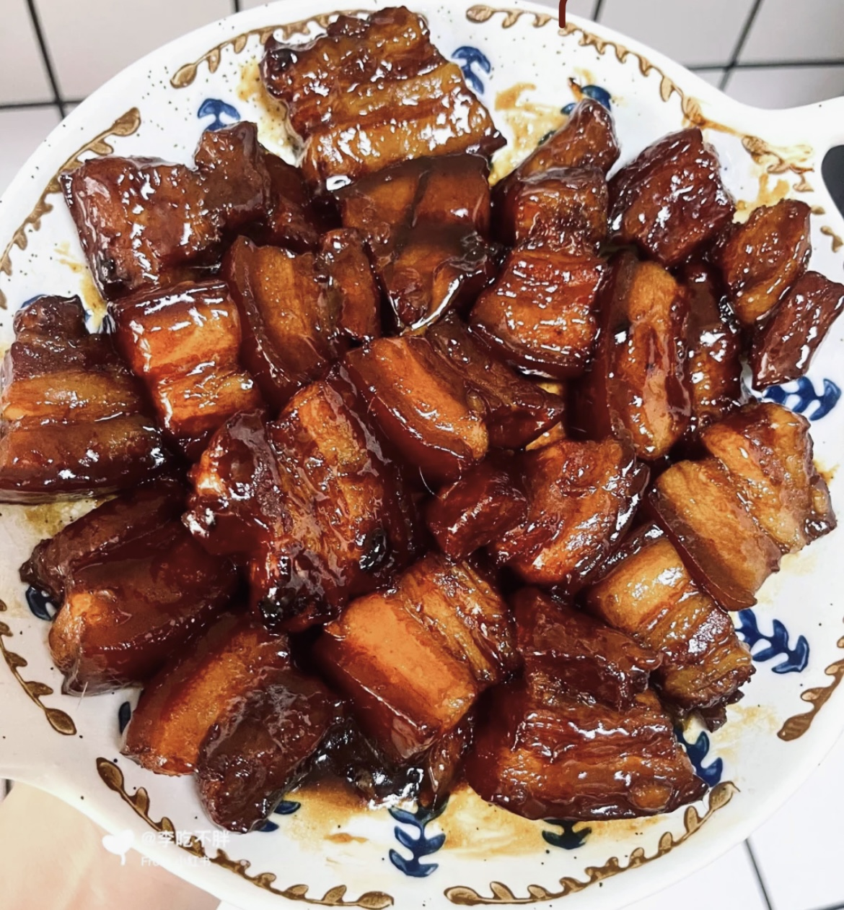
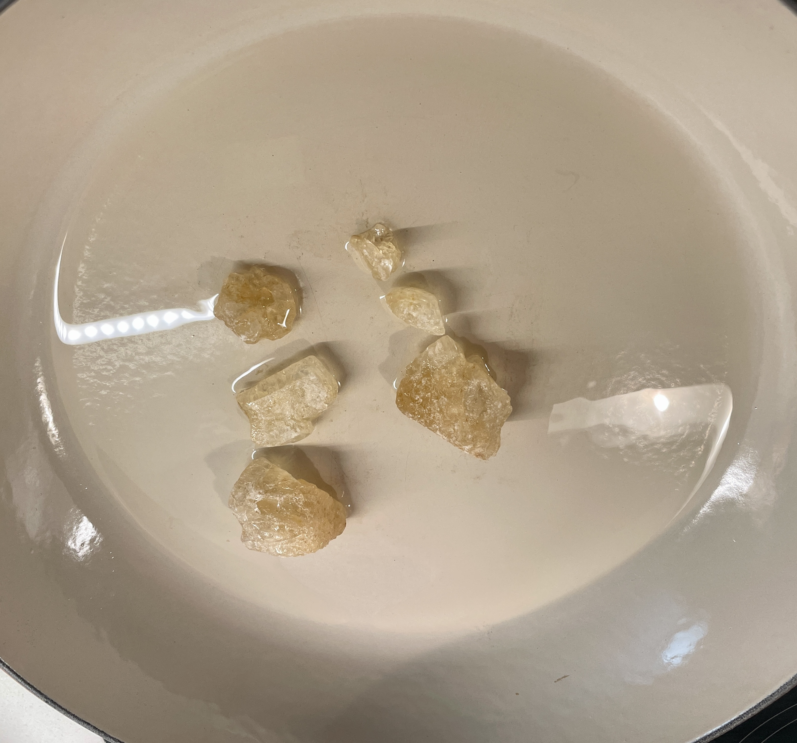
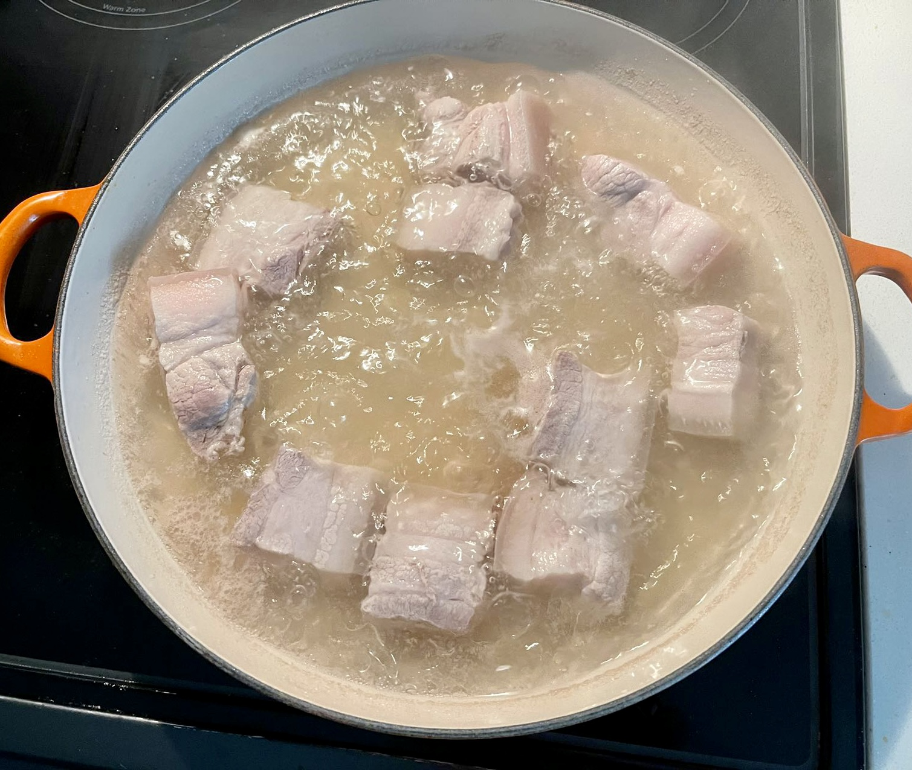
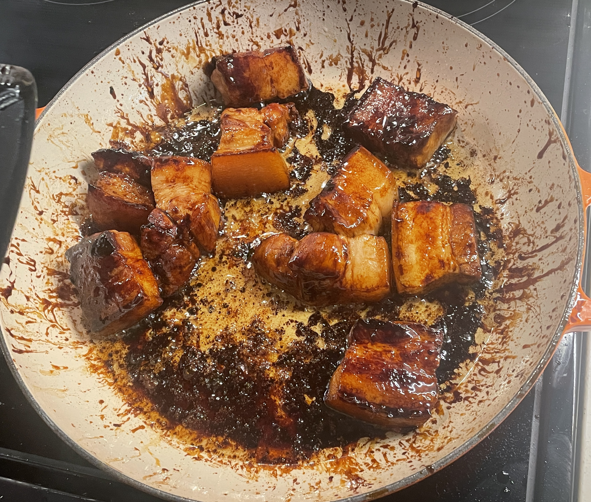
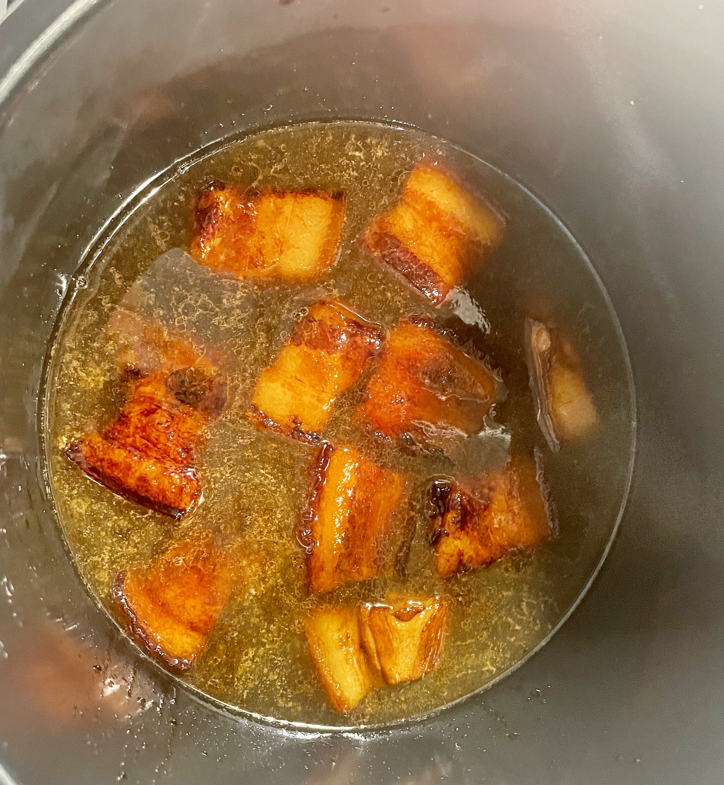

Chinese Braised Pork

Chinese Braised Pork is a traditional Chinese food.
The taste is sweet and salty, mainly made of pork, green onion, garlic and crystal sugar.
Ingredients
- 800g Pork+ 10g green onion+ 25g crystal sugar

- 1tablespoon sugar+ 2tablespoon soy sauce

Cooking Steps
- Put crystal sugar in the pot.

- Cut the pork into chunks and put it in the pot.

- Stir fry after adding soy sauce.

- Put in a pressure cooker.

- Add a pinch of sugar and green onions.

- Done after 5 hours of simmering in the pressure cooker.